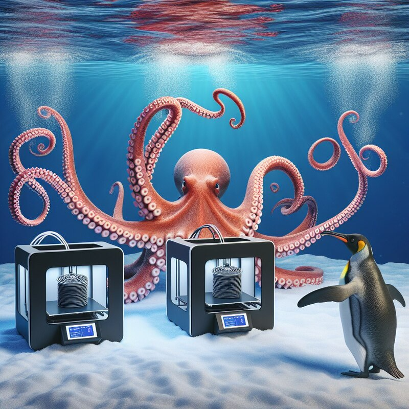

Про идентификацию одинаковых подключаемых USB устройств в Linux

Возникла у меня идея - подключить к одному перепрошитому под linux TV Box'у три 3D принтера, чтобы он один управлял с помощью трёх сессий octoprint ими всеми, ещё и транслировал изображение с камер. Возник ряд сложностей - как идентифицировать конкретное устройство, чтобы назначить на него определённый octoprint?
Дело в том, что Linux создаёт tty устройства в /dev/ в порядке их подключения, т.е. первым подключенным/включенным будет /dev/ttyUSB0, вторым - /dev/ttyUSB1 и так далее. Включением/выключением устройств управляет система умного дома. Закончилась печать - принтер выключился. Нужно что-то напечатать - включился через умную розетку. Ещё и энергопотребление попутно логируется. И в различные моменты времени один и тот же принтер может быть подключен и к /dev/ttyUSB0 и к /dev/USB2, например, если /dev/ttyUSB0 и /dev/ttyUSB1 уже заняты.
Вторая сложность заключается в том, что все платы принтеров имеют одну и ту же китайскую микросхему CH340/CH341, которая обеспечивает коммуникацию с принтером через серийный порт:
Bus 002 Device 006: ID 1a86:7523 QinHeng Electronics CH340 serial converter
Bus 002 Device 008: ID 1a86:7523 QinHeng Electronics CH340 serial converter
Bus 002 Device 007: ID 1a86:7523 QinHeng Electronics CH340 serial converter
Мало того, 2 из трёх принтеров - это одна и та же модель. В связи с этим я искал способ идентификации принтеров по номеру порта на USB хабе. Т.е. конкретный octoprint просто будет подключаться к принетру, подключенному в конкретное гнездо USB хаба и никакой путаницы не будет.
Сначала я попытался написать набор правил для UDEV:
SUBSYSTEM=="tty", ATTRS{idVendor}=="1a86", ATTRS{idProduct}=="7523", ATTRS{devpath}=="2.1.1", SYMLINK+="e3v3se01"
SUBSYSTEM=="tty", ATTRS{idVendor}=="1a86", ATTRS{idProduct}=="7523", ATTRS{devpath}=="2.1.2", SYMLINK+="e3v3se02"
SUBSYSTEM=="tty", ATTRS{idVendor}=="1a86", ATTRS{idProduct}=="7523", ATTRS{devpath}=="2.1.4", SYMLINK+="fbg5"
Выполнил udevadm control --reload и udevadm trigger, после чего в /dev/ должны были появиться симлинки вида /dev/e3v3se01, /dev/e3v302, /dev/fbg5, но по неизвестной мне причине этого не произошло. Затем я попытался проверить срабатывание правил с помощью следующего способа:
SUBSYSTEM=="tty", ACTION="add", ATTRS{idVendor}=="1a86", ATTRS{idProduct}=="7523", ATTRS{devpath}=="2.1.1", RUN+="/opt/bin/addlink.sh e3v3se01 %k"
SUBSYSTEM=="tty", ACTION="add", ATTRS{idVendor}=="1a86", ATTRS{idProduct}=="7523", ATTRS{devpath}=="2.1.2", RUN+="/opt/bin/addlink.sh e3v3se02 %k"
SUBSYSTEM=="tty", ACTION="add", ATTRS{idVendor}=="1a86", ATTRS{idProduct}=="7523", ATTRS{devpath}=="2.1.4", RUN+="/opt/bin/addlink.sh fbg5 %k"
Скрипт addlink.sh просто должен был дописывать полученное содержимое в файл. Но и это не сработало. systemctl reload udev и перезагрузка системы в целом не принесла результата.
И тогда я нашёл решение куда проще. Запускаем монитор событий UDEV и включаем питание принтера:
root@octoprint:~# udevadm monitor
monitor will print the received events for:
UDEV - the event which udev sends out after rule processing
KERNEL - the kernel uevent
KERNEL[1847.830213] add /devices/platform/ff600000.usb/xhci-hcd.0.auto/usb2/2-1/2-1.1 (usb)
KERNEL[1847.890497] add /devices/platform/ff600000.usb/xhci-hcd.0.auto/usb2/2-1/2-1.1/2-1.1:1.0 (usb)
KERNEL[1847.890682] add /devices/platform/ff600000.usb/xhci-hcd.0.auto/usb2/2-1/2-1.1/2-1.1:1.0/ttyUSB1 (usb-serial)
KERNEL[1847.895520] add /devices/platform/ff600000.usb/xhci-hcd.0.auto/usb2/2-1/2-1.1/2-1.1:1.0/ttyUSB1/tty/ttyUSB1 (tty)
KERNEL[1847.895839] bind /devices/platform/ff600000.usb/xhci-hcd.0.auto/usb2/2-1/2-1.1/2-1.1:1.0/ttyUSB1 (usb-serial)
KERNEL[1847.896191] bind /devices/platform/ff600000.usb/xhci-hcd.0.auto/usb2/2-1/2-1.1/2-1.1:1.0 (usb)
KERNEL[1847.896605] bind /devices/platform/ff600000.usb/xhci-hcd.0.auto/usb2/2-1/2-1.1 (usb)
UDEV [1847.902870] add /devices/platform/ff600000.usb/xhci-hcd.0.auto/usb2/2-1/2-1.1 (usb)
UDEV [1847.907928] add /devices/platform/ff600000.usb/xhci-hcd.0.auto/usb2/2-1/2-1.1/2-1.1:1.0 (usb)
UDEV [1847.910245] add /devices/platform/ff600000.usb/xhci-hcd.0.auto/usb2/2-1/2-1.1/2-1.1:1.0/ttyUSB1 (usb-serial)
UDEV [1847.919392] add /devices/platform/ff600000.usb/xhci-hcd.0.auto/usb2/2-1/2-1.1/2-1.1:1.0/ttyUSB1/tty/ttyUSB1 (tty)
UDEV [1847.922316] bind /devices/platform/ff600000.usb/xhci-hcd.0.auto/usb2/2-1/2-1.1/2-1.1:1.0/ttyUSB1 (usb-serial)
UDEV [1847.927072] bind /devices/platform/ff600000.usb/xhci-hcd.0.auto/usb2/2-1/2-1.1/2-1.1:1.0 (usb)
UDEV [1847.933550] bind /devices/platform/ff600000.usb/xhci-hcd.0.auto/usb2/2-1/2-1.1 (usb)
Видим, что наше серийное устройство подключено к /dev/ttyUSB1. Далее смотрим информацию о девайсе:
root@octoprint:/opt/bin# udevadm info /dev/ttyUSB1
P: /devices/platform/ff600000.usb/xhci-hcd.0.auto/usb2/2-1/2-1.1/2-1.1:1.0/ttyUSB1/tty/ttyUSB1
M: ttyUSB1
R: 1
U: tty
D: c 188:1
N: ttyUSB1
L: 0
S: serial/by-path/platform-xhci-hcd.0.auto-usb-0:1.1:1.0-port0
S: serial/by-id/usb-1a86_USB_Serial-if00-port0
E: DEVPATH=/devices/platform/ff600000.usb/xhci-hcd.0.auto/usb2/2-1/2-1.1/2-1.1:1.0/ttyUSB1/tty/ttyUSB1
E: DEVNAME=/dev/ttyUSB1
E: MAJOR=188
E: MINOR=1
E: SUBSYSTEM=tty
E: USEC_INITIALIZED=1847918269
E: ID_BUS=usb
E: ID_MODEL=USB_Serial
E: ID_MODEL_ENC=USB\x20Serial
E: ID_MODEL_ID=7523
E: ID_SERIAL=1a86_USB_Serial
E: ID_VENDOR=1a86
E: ID_VENDOR_ENC=1a86
E: ID_VENDOR_ID=1a86
E: ID_REVISION=0264
E: ID_TYPE=generic
E: ID_USB_MODEL=USB_Serial
E: ID_USB_MODEL_ENC=USB\x20Serial
E: ID_USB_MODEL_ID=7523
E: ID_USB_SERIAL=1a86_USB_Serial
E: ID_USB_VENDOR=1a86
E: ID_USB_VENDOR_ENC=1a86
E: ID_USB_VENDOR_ID=1a86
E: ID_USB_REVISION=0264
E: ID_USB_TYPE=generic
E: ID_USB_INTERFACES=:ff0102:
E: ID_USB_INTERFACE_NUM=00
E: ID_USB_DRIVER=ch341
E: ID_USB_CLASS_FROM_DATABASE=Vendor Specific Class
E: ID_VENDOR_FROM_DATABASE=QinHeng Electronics
E: ID_MODEL_FROM_DATABASE=CH340 serial converter
E: ID_PATH=platform-xhci-hcd.0.auto-usb-0:1.1:1.0
E: ID_PATH_TAG=platform-xhci-hcd_0_auto-usb-0_1_1_1_0
E: DEVLINKS=/dev/serial/by-path/platform-xhci-hcd.0.auto-usb-0:1.1:1.0-port0 /dev/serial/by-id/usb-1a86_USB_Serial-if00-port0
E: TAGS=:systemd:
E: CURRENT_TAGS=:systemd:
Нас интересует первое значение из строки DEVLINKS: /dev/serial/by-path/platform-xhci-hcd.0.auto-usb-0:1.1:1.0-port0. Как раз его мы можем использовать в качестве пути к девайсу, подключенному к первому порту USB хаба. Аналогично на четвёртом порту у меня сейчас подключен другой принтер:
root@octoprint:/opt/bin# ls -lah /dev/serial/by-path/platform-xhci-hcd.0.auto-usb-0\:1.*
lrwxrwxrwx 1 root root 13 июн 16 01:16 /dev/serial/by-path/platform-xhci-hcd.0.auto-usb-0:1.1:1.0-port0 -> ../../ttyUSB1
lrwxrwxrwx 1 root root 13 июн 16 00:53 /dev/serial/by-path/platform-xhci-hcd.0.auto-usb-0:1.4:1.0-port0 -> ../../ttyUSB0
Таким образом, можно ещё проще находить устройства, подключенные к конкретному порту - выполняем ls -lah /dev/serial/by-path/*, затем подключаем устройство к USB, после чего снова выполняем ту же команду и смотрим, что появилось, далее используем это для своих целей.
В octoprint, например, можно добавить данный путь в Settings -> Printer -> Serial Connection -> Additional serial ports. Либо подключать скриптом после включения питания принтера автоматически:
#!/bin/sh
cd `dirname "$0"`
# Отдельный скрипт, включающий питание принтера
./e3v3se01_on.sh
# Время, необходимое для инициализации принтера до момента готовности принять подключение через серийный порт
sleep 4
# API key for your OctoPrint instance
API_KEY="139CA....................10" # API ключ, необходимо получить в разделе Features -> API
# URL for your OctoPrint instance
OCTOPRINT_URL="http://localhost:5002/api"
# Check if the printer is connected
connected="$(curl -s -H "X-Api-Key: $API_KEY" "$OCTOPRINT_URL/connection" | jq -r '.current.state' | grep "Operational")"
if [ -z "$connected" ]; then
echo "Printer is not connected, trying to connect"
curl -s -X POST -H "X-Api-Key: $API_KEY" -H "Content-Type: application/json" -d '{"command": "connect", "port": "/dev/serial/by-path/platform-xhci-hcd.0.auto-usb-0:1.1:1.0-port0", "baudrate": 115200}' "$OCTOPRINT_URL/connection"
echo "Printer connected"
else
echo "Printer already connected"
fi
P.S.: Уже после того, как успешно всё настроил, вспомнил, что решал подобную проблему в отношении подключения блочного устройства - различные флешки, USB SSD / HDD и прочее можно подключать тем же точно образом, используя ls -lah /dev/disk/by-path/*, ls -lah /dev/disk/by-uuid/*, ls -lah /dev/disk/by-partlabel/* и т.д..
Теги: 3d-printing, linux